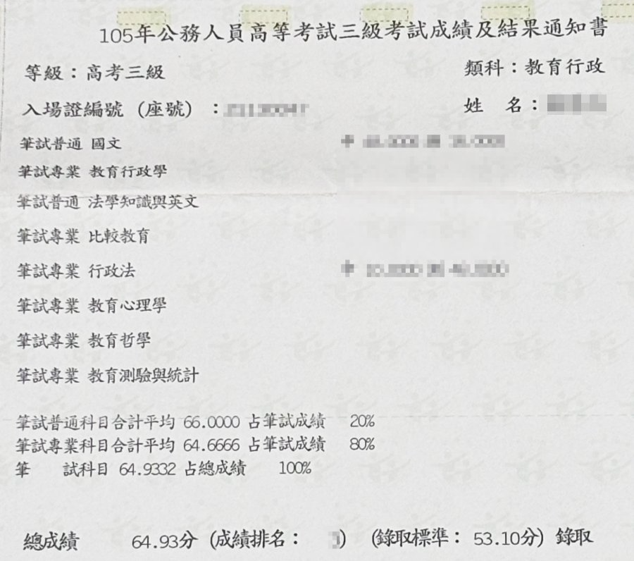
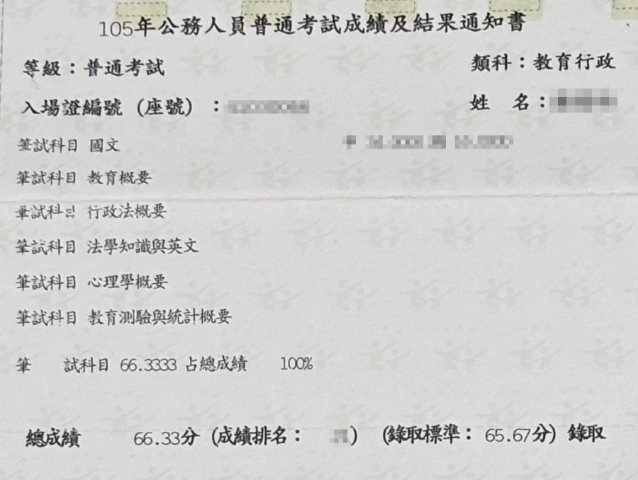
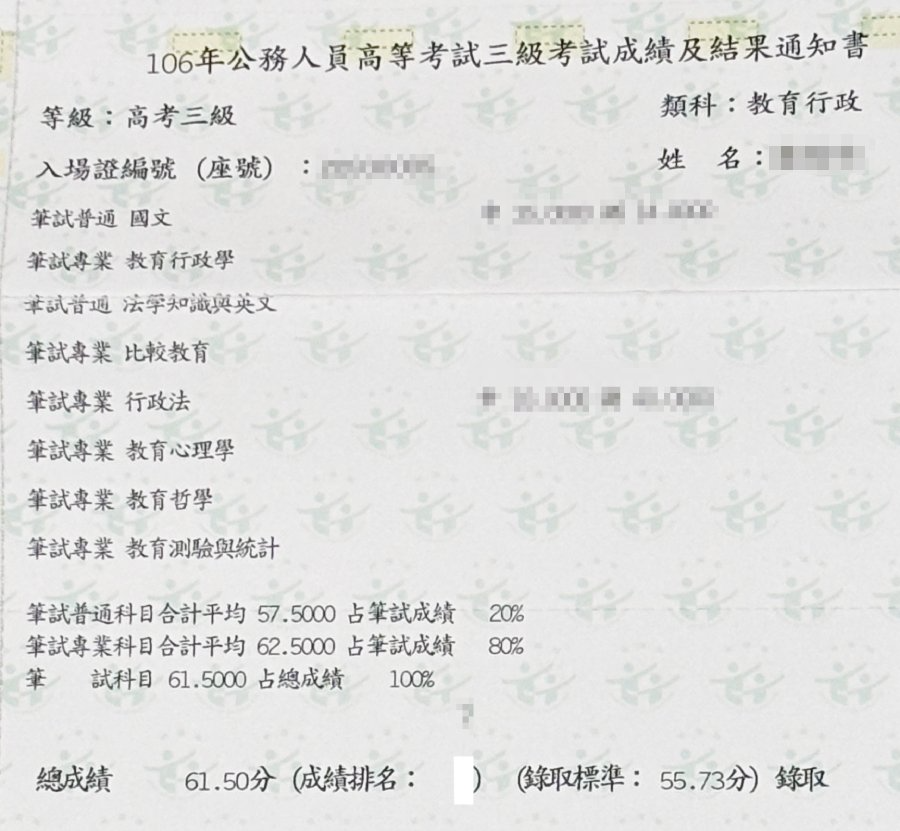
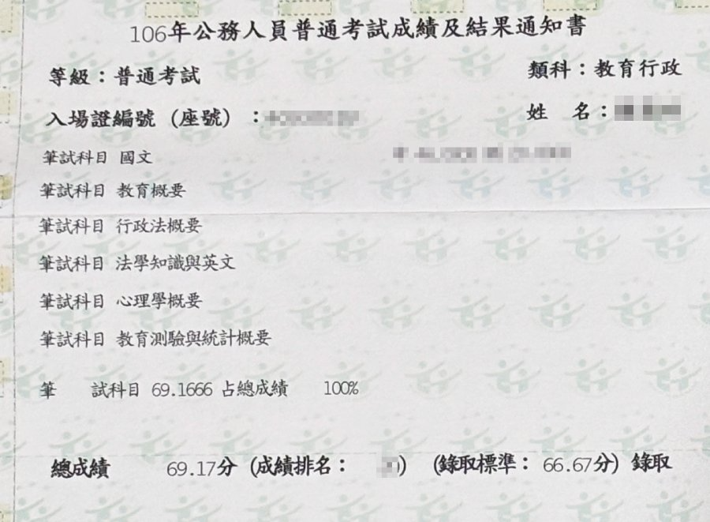
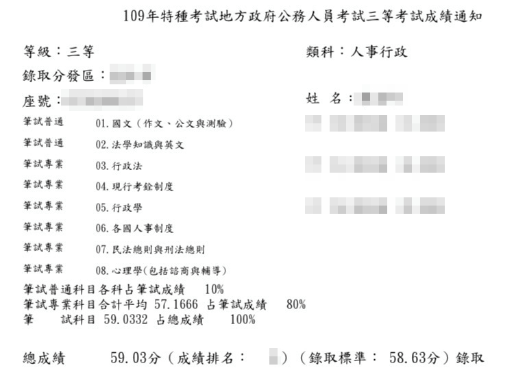
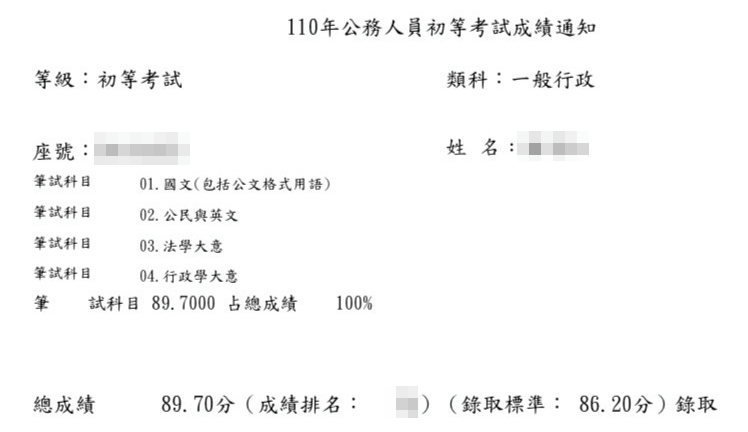
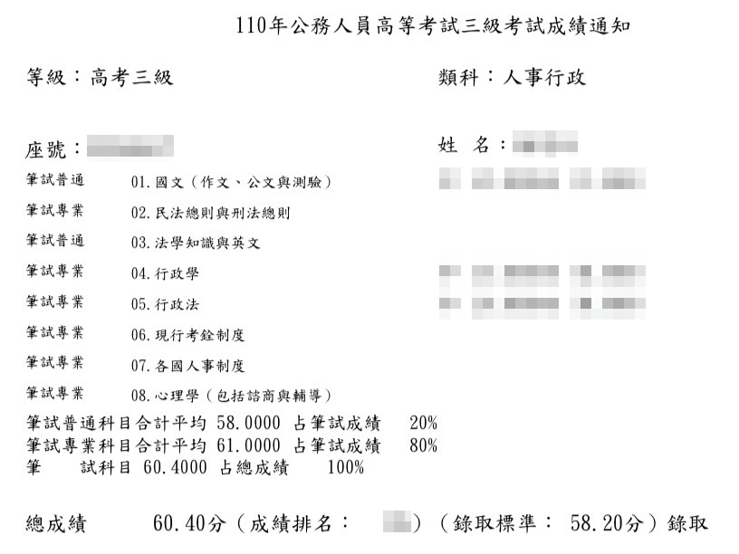

曾身為非本科系考生的我，深刻了解盲目苦讀的無助。每次能幸運在短時間內上岸，靠的不是天賦，而是正確、可重複穩定執行的「輸入與輸出方法」。這是一套可以被理解，且能實際落地應用的備考邏輯。








（歷次考試成績單，除了前2次年代久遠不見了，剩下都在這）
踏入國家考試真的是一個意外。
我是國立大學設計相關科系畢業的，畢業後短暫擔任了設計師工作不到一年，因為想多深入學習思想層面的理論，所以選了師範體系的美術相關研究所就讀研究所，想說修個教育學程能多一條出路。
沒想到，研究所過的很辛苦，人文類科的研究所其實很不好唸，加上我同時在修中學教育學程，還要補足不少創作學分，大概要讀到4年才能畢業。過程才發現我對這條路沒興趣，但拿了父母好大一筆錢做作業(創作科系很燒錢)，不好跟父母說我想休學不唸了，必須給個說法。
如果說要考高普考，爸媽會原諒我休學吧?
後來，我休學了，成了全職考生。我想趕快上榜，沒有考慮先去找個工作，想要衝衝看。
我選了各縣市開缺比較多的教育行政，就算教育學程沒修完，至少還有1-2科是我上過課的。當時實在太窮，唯一的家教收入買了參考書及教科書就剩不多了。那時離當年度的考試也只剩下不到一年，真的籌到錢來報名補習班或買函授讀也太晚。
一開始我做筆記的方式都是把教科書大標題及粗線內容抄下來，一整天拼命讀書手寫筆記，寫的手真的好痠。知道要排讀書計畫，也是後來慢慢自己從網路上爬文慢慢學會的。民國百年前國考資訊在網路上很散亂(不小心洩漏我大略的年齡了😂)，大概全都要靠補習班網站或ptt上公開的上榜學生經驗分享文。
那時排讀書計畫甚至不知道要個複習及回想流程，一口氣讀了一堆前面早忘了。不知道要去蒐集課本教材外的新聞資訊及關於考試的小道消息、不知道怎樣寫申論題…，不知道的事太多了。記憶術也是心理學讀到一半才學會的。
最可怕的是心理壓力。我往往會想，我又不是教育系、教研所、教育大學畢業的，我還沒錢去補習。我憑什麼考得贏他們?當時高普考的錄取率大約是5%上下，人家都說那個很難，至少要花2年才考得上。我放棄學業不去工作，花這些時間來備考，是正確的決定嗎?
狂做筆記狂看書的我照理來說應該會累的要命，但我每天晚上都睡不著，很怕做錯決定。當時沒學位也沒工作，還被研究所同學說我很傻，兩頭空好可憐。雖然爸媽沒有斥責我研究所讀一半不讀了還放棄教育學程，但心裡說沒有掙扎是假的。我很怕最後什麼都沒有，還是回到原本的社畜工作去，還要被其他知道我在準備考試的人嘲諷。
我太想上榜了。我想了一個方法，我自己在網路上開了一個高普考教育行政討論區，主動先分享我的資源。分享近1-2個月後，也吸引了一些考同樣類科的朋朋主動提供我考試資訊，甚至還有人主動把他考完的補習班補充教材寄給我。(不過，那已經是離考試前一個月的事了…)
我在不斷從這個討論區認識的朋友那、各種網路資訊中修正備考方法。例如，加上複習節奏、交錯安排難易考科、學會做心智圖而不是一直抄教材內容、利用零碎時間回想、學會如何優化申論題答、知道哪裡找考試情報…。很拼命的情況下，我慢慢的看懂了準備考試的邏輯，也從日日按表操課中漸漸能回答考題。在不清楚自己能力的情況下，我去參加考試了。備考8個月後，我考上了。
任職6年後，因為太好奇外面的世界，辭職做了外面不少工作。後來因為決定要結婚要移居外縣市，也因為不成功不想再繼續浸在創業的世界，我又重新再考國考。中間遇過地獄機關重考過(有機會分享，如果大家有趣興趣的話)。我用同一套方法來備考，也轉考了高普考人事行政，發現—同樣的備考邏輯，只要能掌握，完全可以複製到其他的考試上。
目前公職環境中確實有不少可怕的職缺，讓人沒辦法撐到能轉調的時間。在沒打算找其他的工作的情況下，重考換機關的人大有人在。通常只要考上過一次的人，要再上榜第二次，成功率相當高。因為，上榜過的人，多多少少都有自己成功上榜的備考底層邏輯，換參加其他完全沒接觸也沒基礎的考試也一樣能考上(親眼看過非常多這樣的人)。
坦白說，我在公部門工作前後超過10年，漸漸發現我對工作及生活的理想想像是公部門工作不能給我的，因此大部分的歲月過的並不開心。但是我也在職場上遇過一些工作能力很好，但是怎樣都考不上公職的人，真的覺得好可惜。另一方面，也覺得當時在外頭創業失敗，要不是有重考入公職的機會，有俸給的保障，我應該也沒辦法快速再存到錢及享有休假年資。
登出公職，心想，備考的方法若因此消失了還是會覺得有些可惜，所以還是決定分享出來。
如果你還在觀望國考這條路，關於評估是否要進入公部門當公務員，以及初步評估自己的上榜可能，你可以參考我下面這2篇文章。我不是補習班，雖然我現在有推出諮詢服務，但是我不想不負責的騙你公職夢幻好棒棒，希望你是想好才投入的。